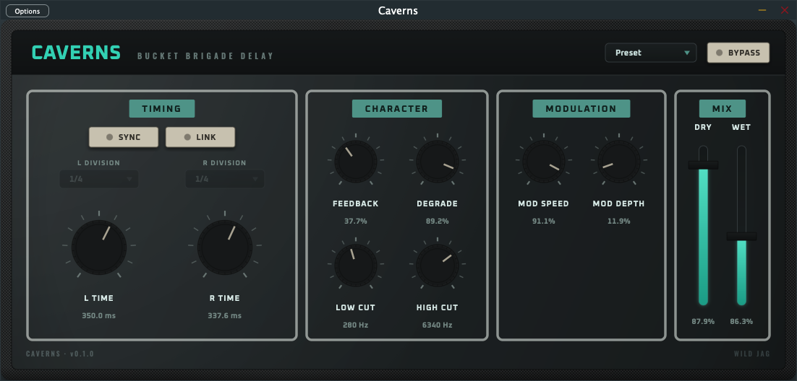
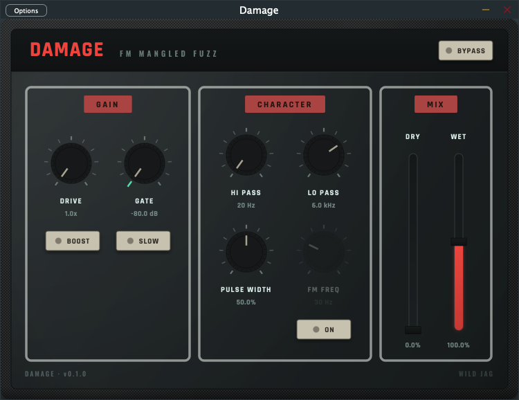
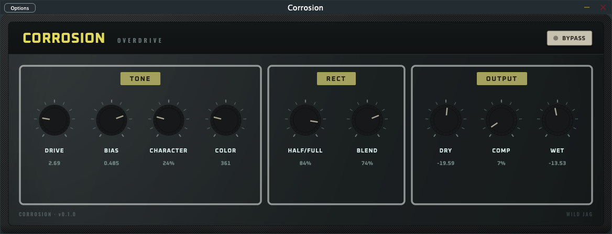
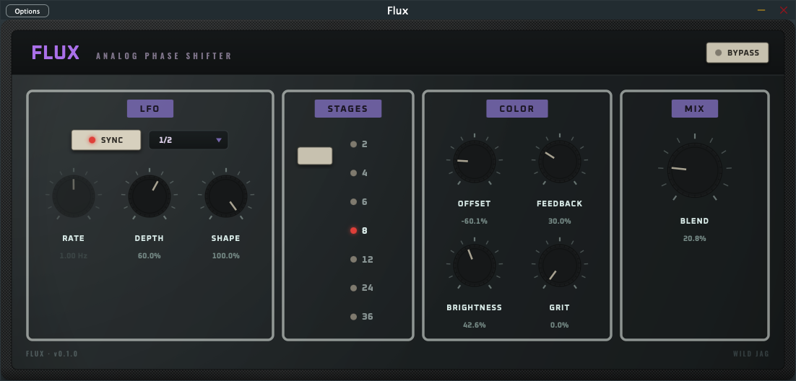
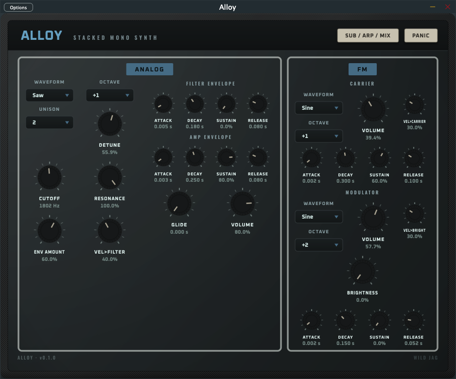
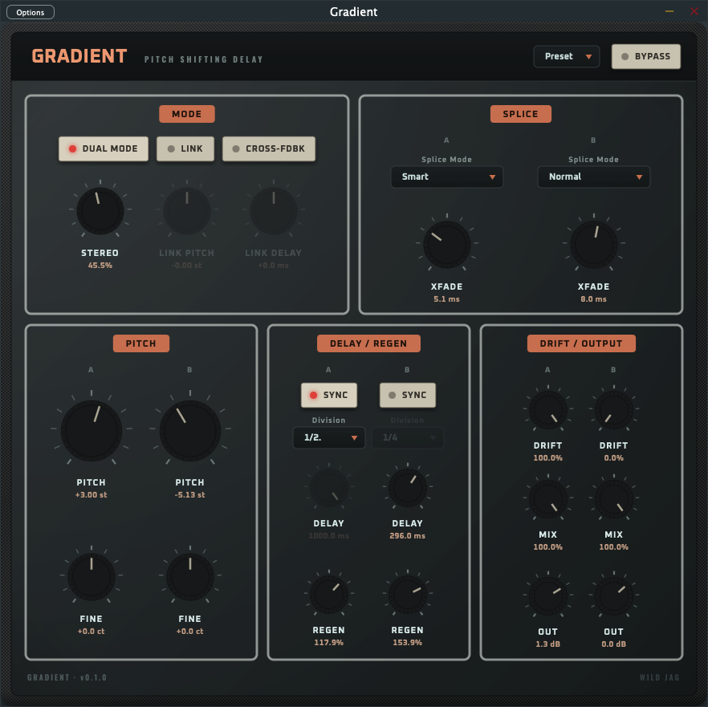

Free & open source
Free plugins, inspired by vintage and analog gear.
One .pkg with a checkbox per plugin and per format (AU / VST3 / Standalone).






.component/.vst3 file, zipped — unzip it
and drag it into ~/Library/Audio/Plug-Ins/Components (AU)
or ~/Library/Audio/Plug-Ins/VST3 (VST3) yourself. Since
there's no installer to carry the Gatekeeper approval, macOS may refuse
to load it in your DAW until you clear the quarantine flag it picked up
from the browser download:
xattr -dr com.apple.quarantine
~/Library/Audio/Plug-Ins/Components/Name.component
(swap in the actual path). The regular installer above doesn't need
this.